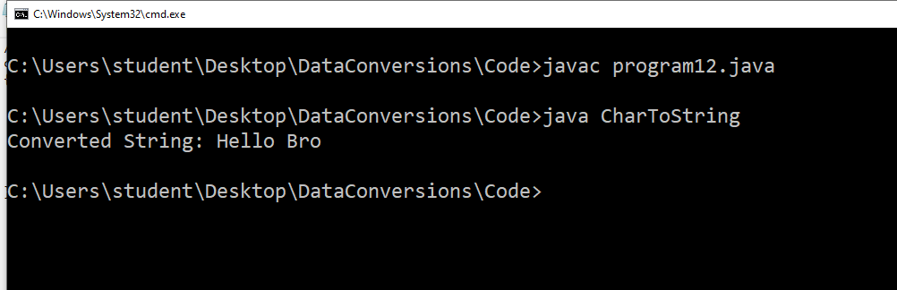
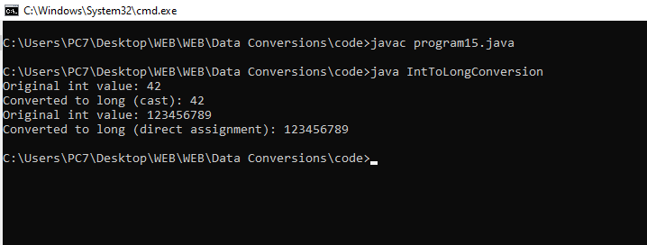
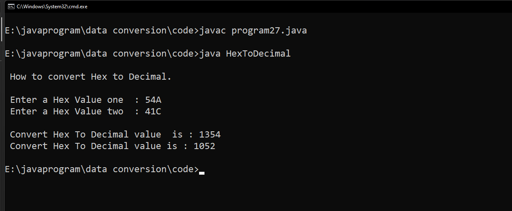

1 :- How to convert String to int.
// How to convert String to int
class StrToInt
{
public static void main(String[] args)
{
String str = "123";
int i=Integer.parseInt(str);
System.out.println("String is : "+str);
System.out.println("Str Convert to a int: "+ i);
System.out.println(1+i);
}
}
Output :-
2 :- How to convert int to String.
class DataConversion2{
public static void main(String[] args) {
int num = 42;
String str = Integer.toString(num);
System.out.println(str);
}
}
Output :-
3 :- How to convert String to long .
class StringToLongExample {
public static void main(String[] args) {
// Sample String
String numberString = "123456789";
try {
// Convert String to long
long number = Long.parseLong(numberString);
// Print the result
System.out.println("Converted long value: " + number);
} catch (NumberFormatException e) {
System.err.println("Error: Unable to parse the string as a long.");
e.printStackTrace();
}
}
}
Output :-
4 :- How to convert String to float.
class LongToStringConversion {
public static void main(String args[])
{
long a = 999999999999L;
System.out.println("Long value:"+a);
// convert into String
String str = String.valueOf(a);
System.out.println(str);
}
}
Output :-
5 :- How to convert String to float
import java.util.Scanner;
class StringToFloat
{
public static void main(String args[])
{
try
{
Scanner sc=new Scanner(System.in);
System.out.print("\nEnter the string numeric value : ");
String s=sc.nextLine();
float f=Float.parseFloat(s);
System.out.println("float value is : "+f);
}
catch(NumberFormatException e)
{
System.out.print("Invalid Input");
}
}
}
Output :-
6 :- How to convert float to String.
//How to convert float to String
class FloatToString
{
public static void main(String[] args)
{
float f = 10.4f;
System.out.println("Float value : "+f);
System.out.println(f + 2);
String stringValue = "" + f;
System.out.println(stringValue + 2);
}
}
Output :-

7 :- How to convert String to double.
//How to convert String to double
class a
{
public static void main(String[] args)
{
String str = "0.5";
double D=Double.parseDouble(str);
System.out.println("String is "+str);
System.out.println("String Converted to an Double "+ D);
System.out.println("Showing the String was converted to Double above "+(1+D));
}
}
Output :-
8 :- How to convert double to String.
import java.util.Scanner;
class DoubleToString
{
public static void main(String[] args)
{
Scanner sc = new Scanner(System.in);
System.out.print("\nEnter a double number: ");
double num = sc.nextDouble();
String str = Double.toString(num);
System.out.println("Converted String: " + str);
}
}
Output :-
9 :- How to convert String to Date.
// Data conversion:- 9. How to convert string to Date.
import java.text.SimpleDateFormat
import java.util.Date
// Main clas
class STD
public static void main(String[] args)throws Exceptio
String str = "30/11/2003"
Date date = new SimpleDateFormat("dd/MM/yyyy").parse(str)
System.out.println("String is converted to Date:")
System.out.println(date)
Output :-

10 :- How to convert Date to String
import java.util.Date;
import java.text.SimpleDateFormat;
class DateToString
{
public static void main(String a[])
{
Date date=new Date();
System.out.println("\nData : "+date);
SimpleDateFormat s=new SimpleDateFormat("yyyy-MM-dd HH:mm:ss");
String str=s.format(date);
System.out.println("String : "+str);
}
}
Output :-
11 :- How to convert String to char.
class a {
public static void main(String[] x) {
String str = "Hello World!";
char[] charArray = str.toCharArray();
for (char c : charArray)
{
System.out.println(c);
}
}
}
Output :-
12 :- How to convert char to String
//How to convert char to String
class CharToString
{
public static void main(String[] args) {
char myChar = 'B';
String myString = "Hello " + myChar + "ro";
System.out.println("Converted String: " + myString);
}
}
Output :-

13 :- How to convert String to Object .
class programg13{
public static void main(String[] args) {
// Convert String to Integer
String intStr = "123";
int intValue = Integer.parseInt(intStr);
System.out.println("Converted Integer: " + intValue);
// Convert String to Double
String doubleStr = "3.14";
double doubleValue = Double.parseDouble(doubleStr);
System.out.println("Converted Double: " + doubleValue);
// Convert String to Boolean
String boolStr = "true";
boolean boolValue = Boolean.parseBoolean(boolStr);
System.out.println("Converted Boolean: " + boolValue);
// Convert String to Custom Object (using Constructor)
String customStr = "Hello, World!";
CustomObject customObject = new CustomObject(customStr);
System.out.println("Converted Custom Object: " + customObject.getData());
}
// Example Custom Object
static class CustomObject {
private String data;
public CustomObject(String data) {
this.data = data;
}
public String getData() {
return data;
}
}
}
Output :-

14 :- How to convert Object to String.
//Programgram no. : data conversion 14
//Programgram name : How to convert Object to String
class dConversion{
public static void main(String[] args) {
Object obj = new Integer(100);
String s = String.valueOf(obj);
System.out.println(s);
if(s instanceof String){
System.out.println("It is string type...");
}
}
}
Output :-
15 :- How to convert int to long.
class IntToLongConversion {
public static void main(String[] args) {
// Convert int to long using cast
int intValue = 42;
long longValue1 = (long) intValue;
// Convert int to long using direct assignment
int intValue2 = 123456789;
long longValue2 = intValue2;
// Display the results
System.out.println("Original int value: " + intValue);
System.out.println("Converted to long (cast): " + longValue1);
System.out.println("Original int value: " + intValue2);
System.out.println("Converted to long (direct assignment): " + longValue2);
}
}
Output :-

16:- How to convert long to int
class LongToIntConversion {
public static void main(String[] args) {
// Convert long to int using cast
long longValue = 987654321L;
int intValue1 = (int) longValue;
// Convert long to int using direct assignment
long longValue2 = 987654322L;
int intValue2 = (int) longValue2;
// Display the results
System.out.println("Original long value: " + longValue);
System.out.println("Converted to int (cast): " + intValue1);
System.out.println("Original long value: " + longValue2);
System.out.println("Converted to int (direct assignment): " + intValue2);
}
}
Output :-
17:- How to convert int to double
class programg17 {
public static void main(String[] args) {
// Convert int to double
int intValue = 42;
double doubleValue = (double) intValue; // Casting int to double
// Alternatively, you can use: double doubleValue = intValue;
// Display the results
System.out.println("Original int value: " + intValue);
System.out.println("Converted double value: " + doubleValue);
}
}
Output :-

18 :- How to convert double to int.
import java.util.Scanner;
class DoubleToInt
{
public static void main(String args[])
{
System.out.println("\n How to Convert Double To Int.\n");
System.out.print(" Enter a double value one : ");
Scanner sc=new Scanner(System.in);
double num1 = sc.nextDouble();
System.out.print(" Enter a double value Two : ");
double num2 = sc.nextDouble();
int value1 =(int)num1;
int value2=(int)num2;
System.out.println("\n Convert Double value To Integer value is : "+value1);
System.out.println(" Convert Double value To Integer value is : "+value2);
}
}
Output :-
19 :- How to convert char to int.
//How to convert char to int
class chartoint
{
public static void main(String a[])
{
char myChar = 'A';
int myInt = myChar;
System.out.println("Character value: "+ myChar);
System.out.println();
System.out.println("Value after convert to Int: "+ myInt);
}
}
Output :-

20 :- How to convert int to char.
// Using Concept of Type-casting
import java.util.*;
class A {
public static void main(String[] args)
{
int i = 97;
// Type casting character to integer
char ch = (char)i;
System.out.println(ch);
}
}
Output :-
21 :- How to convert String to boolean.
import java.util.Scanner;
class convertStringToBoolean
{
public static void main(String args[])
{
System.out.println("\n How to convert String To Boolean.");
Scanner sc= new Scanner(System.in);
System.out.println(" ");
System.out.print(" Enter the String1 = ");
String str1 = sc.nextLine();
System.out.print(" Enter the String2 = ");
String str2 = sc.nextLine();
System.out.print(" Enter the String3 = ");
String str3 = sc.nextLine();
boolean b1 = Boolean.valueOf(str1);
boolean b2 = Boolean.valueOf(str2);
boolean b3 = Boolean.valueOf(str3);
System.out.println("");
System.out.println(" The convert String To Boolean Value is : "+b1);
System.out.println(" The convert String To Boolean Value is : "+b2);
System.out.println(" The convert String To Boolean Value is : "+b3);
}
}
Output :-

22 :- How to convert boolean to String.
import java.util.Scanner;
class booleantostring {
public static void main(String[] a) {
Scanner s = new Scanner(System.in);
System.out.print("Enter a boolean value (true or false): ");
String booleanInput = s.nextLine();
boolean booleanValue = Boolean.parseBoolean(booleanInput);
String stringResult = booleanToString(booleanValue);
System.out.println("String equivalent: " + stringResult);
}
private static String booleanToString(boolean booleanValue) {
return String.valueOf(booleanValue);
}
}
Output :-
23 :- How to convert Date to Timestamp.
import java.sql.Timestamp;
import java.util.Date;
class DateToTimestampExample {
public static void main(String[] args) {
// Create a Date object
Date date = new Date();
// Convert the Date to a Timestamp
Timestamp timestamp = new Timestamp(date.getTime());
System.out.println("Date: " + date);
System.out.println("Timestamp: " + timestamp);
}
}
Output :-
24 :- How to convert Timestamp to Date.
import java.sql.Timestamp;
import java.util.Date;
class TimestampToDateConversion {
public static void main(String[] args) {
// Create a Timestamp
Timestamp timestamp = new Timestamp(System.currentTimeMillis());
// Convert Timestamp to Date
Date date = new Date(timestamp.getTime());
// Display the results
System.out.println("Original Timestamp: " + timestamp);
System.out.println("Converted to Date: " + date);
}
}
Output :-
25 :- How to convert Binary to Decimal.
class BinarytoDecimal{
public static void main(String args[]){
String binaryString="1010";
System.out.println("Binary Strings:"+binaryString );
int decimal=Integer.parseInt(binaryString,2);
System.out.println(decimal);
}}
Output :-
26 :- How to convert Decimal to Binary.
//How to convert Decimal to Binary
class DecimalToBinary {
public static void main(String[] args) {
int decimalNumber =9;
System.out.println("Number is:"+decimalNumber);
StringBuilder binary = new StringBuilder();
if (decimalNumber == 0) {
binary.append(0);
} else {
while (decimalNumber > 0) {
int remainder = decimalNumber % 2;
binary.insert(0, remainder);
decimalNumber = decimalNumber / 2;
}
}
System.out.println("Binary representation: "+ binary.toString());
}
}
Output :-
27 :- How to convert Hex to Decimal.
import java.util.Scanner;
class HexToDecimal
{
public static void main(String args[])
{
System.out.println("\n How to convert Hex to Decimal.\n");
Scanner sc=new Scanner(System.in);
System.out.print(" Enter a Hex Value one : ");
String Hex1 = sc.nextLine();
System.out.print(" Enter a Hex Value two : ");
String Hex2 = sc.nextLine();
int dec1 = Integer.parseInt(Hex1, 16);
int dec2 = Integer.parseInt(Hex2, 16);
System.out.println("\n Convert Hex To Decimal value is : " + dec1);
System.out.println(" Convert Hex To Decimal value is : " + dec2);
}
}
Output :-

28 :- How to convert Decimal to Hex.
class DecimalToHexConversion {
public static void main(String[] args) {
// Decimal number
int decimalNumber = 255;
// Convert decimal to hex
String hexString = Integer.toHexString(decimalNumber);
// Display the results
System.out.println("Decimal number: " + decimalNumber);
System.out.println("Converted to Hex: " + hexString.toUpperCase());
}
}
Output :-
29 :- How to convert Octal to Decimal
.
class GFG {
public static void main(String args[])
{
String onum = "157";
int num = Integer.parseInt(onum, 8);
System.out.println(
"Decimal equivalent of Octal value 157 is: "
+ num);
}
}
Output :-
30 :- How to convert Decimal to Octal.
import java.util.Scanner;
class DecimalToOctal
{
public static void main(String
import java.util.Scanner;
class DecimalToOctal
{
public static void main(String args[])
{
Scanner input = new Scanner( System.in );
System.out.print("Enter a decimal number : ");
int num =input.nextInt();
String octalString = Integer.toOctalString(num);
System.out.println("Method 1: Decimal to octal: " + octalString);
}
}
args[])
{
Scanner input = new Scanner( System.in );
System.out.print("Enter a decimal number : ");
int num =input.nextInt();
String octalString = Integer.toOctalString(num);
System.out.println("Method 1: Decimal to octal: " + octalString);
}
}
Output :-